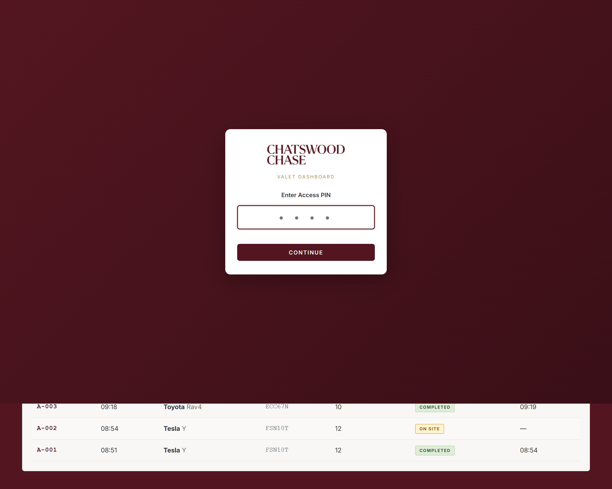
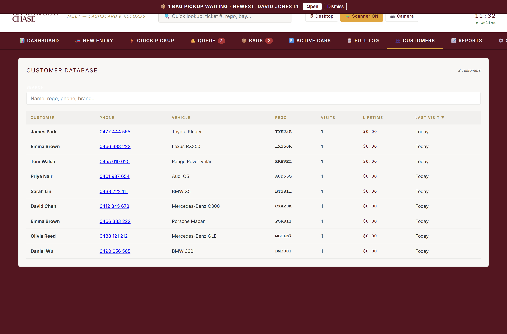
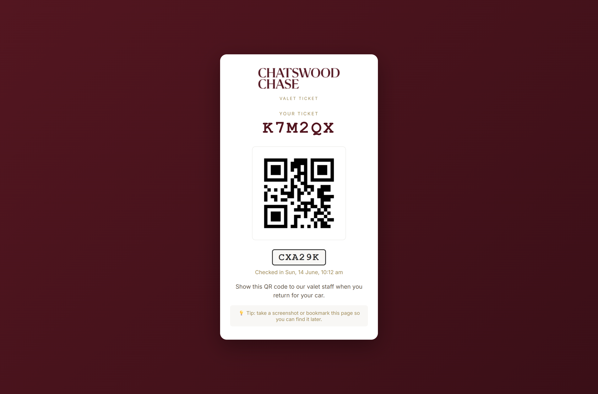

Valet App — Feature Guide
Overview
The Chatswood Chase valet app is a single web-based dashboard that runs the entire valet operation — check cars in and out, take payment, print key tags, text customers their ticket, run hands-free shopping and car wash add-ons, and give management live reports. It runs on every device at the stand (counter PC, tablets, staff phones) and stays in sync in real time.

Check-in (New Entry)
The drop-off form. Ticket number and time-in fill automatically.

- Captures customer name, phone (for the SMS ticket), car brand/model/colour, parking bay, and number plate — typed or read automatically with the camera (plate OCR).
- Damage diagram — tap the car outline to mark existing scratches/dents before parking. If the plate has been seen before, the last visit's marks pre-load automatically so staff can confirm or update them.
- Charge to shop, VIP flag, car wash add-on, and free-text notes, all on the same form.
- Optional photo + GPS capture at drop-off.
- Saving auto-prints the key tag, texts the customer their QR ticket link, and puts the car on Active Cars / Dashboard everywhere instantly.
Quick Pickup
Fast lookup to return a car: scan the key tag / QR ticket, or search by ticket, name, plate or bay from the top-bar search on any screen.

Pickup Queue
When a customer asks for their car ahead of time, it goes in the queue with an ETA countdown that changes colour as it gets closer to due (and flags overdue in red). Status can be pushed live to the customer's ticket page — "on its way" or "ready at the desk".

Active Cars & Checkout
The full working list of everything on site — ticket, customer, plate, brand, bay, time in, running duration (colour-coded) and fee.

Per-row actions: call the customer, resend the QR ticket, reprint the key tag, edit details, log a bag pickup, add/manage a car wash, view/edit damage marks & notes, put the car in the queue, or check it out. An overstay banner flags any car left overnight or past a configurable hour threshold.
Checkout & payment
- Card / Cash / EFTPOS / Other, Unpaid, Complimentary, or Charge to shop/account
- Level 1 promotion — free valet & parking against a validated shop receipt
- Store validations and %/$ discounts
- Tips and fee overrides
- Square Terminal integration — send the charge to a paired card terminal; a successful charge auto-checks the car out
- A mandatory return condition check (clean vs. new damage/incident, with customer acknowledgement) logged for the record
Bags — hands-free shopping
Customers leave purchases at stores; valet collects everything and loads the car while it's parked.

- Jobs move through requested → collecting → in car → done; a car can have several rounds running at once (one per shop), each tracked separately.
- Any staff member can claim a job, or on desktop a job can be assigned to a specific staff member — it rings/vibrates their phone with an alert (plus an OS notification if the app is closed).
- A proof photo is taken in the car when bags are loaded and sent to the customer.
- Both the collector and the loader are credited separately in reports.
Car wash
Valet can add an on-site car wash from Xtream Car Care and bill it on the same valet ticket.

- Add a wash at check-in or any time while parked; pick package + size (small/large) and the price fills in automatically.
- Track the car's wash status (taken to wash → washed, back) right from Active Cars.
- Wholesale cost per package is set in Settings so the Payments report shows what's owed to Xtream and the margin kept, separate from parking revenue.
Dashboard
The at-a-glance view of the day for managers and staff alike.

- Stat tiles: cars in, cars out, currently on site, pickups pending, today's revenue (tap to see who paid what), average stay.
- A shared handover notepad that auto-clears each morning.
- Top brands and recent activity for the day.
- Live customer feedback alerts — a star rating left on a customer's ticket page pops a toast on every open device instantly (flagged red for 3★ or under) and pins a banner until reviewed.
Customers
A searchable database of everyone who's used the valet, built automatically from every visit and keyed by number plate.

- Search by name, plate or phone to see full visit history and total spend; returning customers and VIPs are flagged.
- Every visit's damage record (intake marks, notes, and how the car was returned) is one tap away.
Reports
Manager analytics across a chosen date range, exportable to CSV or print-ready PDF.


| Report | Covers |
|---|---|
| Management Summary | Cars, revenue, tips, car wash, validation value, pickup wait SLA, peak occupancy, incidents. |
| Daily Volume | Cars/revenue per day, trends, peak times, brand breakdown. |
| Payments | Cash-up, shop accounts, car wash margin, Level 1 promotion usage, discounts. |
| Staff Performance | Cars parked / checked out / revenue / tips per attendant. |
| Customers | Stay-length tiers, repeat customer stats. |
| Customer Feedback | Star ratings and comments from ticket pages. |
| Bag Jobs by Staff | Hands-free shopping jobs and timing per staff member. |
| Period Comparison | This week/month/year vs. last. |
| Incidents | Logged return-condition damage with acknowledgement. |
| Full Log | Every entry, searchable, with damage-record access. |
Settings
Manager configuration: staff logins & access, car park capacity and overstay alert threshold, retailer list, car wash wholesale pricing, SMS/alert messaging, device setup (key-tag printer, Square Terminal, scanner), and data export/backup.

Other configurable programs (default off, enabled per centre as needed):
- Loyalty program — every N paid valets earns the next one free, auto-applied at checkout.
- Multi-centre support — the app can be cloned to a new site from one central config block, for rollout beyond Chatswood Chase.
Customer ticket page
Every customer gets a link (texted at check-in) to a live ticket page showing their car's status and a QR code, with a spot to leave a star rating and feedback after pickup.

Other capabilities
- Number-plate OCR — camera-read plate at check-in, cloud recognition with an on-device offline fallback.
- BIXOLON key-tag printing — auto-prints on check-in via a local bridge app; one-tap reprint anytime.
- ClickSend SMS — automatic QR ticket text on check-in, and status pushes from the queue.
- Square Terminal payments — in-person card charges from checkout, tied to a per-device terminal ID.
- Cloud photo storage — bag/car photos are stored in cloud storage rather than the database, keeping the app fast as photo volume grows.
Tech stack
- Single-file web app, hosted on GitHub Pages
- Backend: Supabase (database + authentication + file storage + serverless functions)
- Integrations: ClickSend (SMS), Square (card payments), BIXOLON (key-tag printing)
- Timestamps stored in UTC, always displayed in Sydney local time